+------------------------------------------------------------+
| PROJECT TAG |
+------------------------------------------------------------+
| Project : inventory_mgmt |
| Started : July 2, 2026 |
| Status : Prototype |
| Repo : <private> |
+------------------------------------------------------------+
What is it?
A way to manage inventory in a gelato ice cream shop.
Background
Without getting too much into specifics, I met a gelato shop owner that was complaining about how a lot of the work their team needs to do ends up being manual or requires someone to remember to do something.
Let’s be more specific.
The operation is spread over three locations. One location produces for all three. Each location has multiple freezers, each with multiple shelves, where each can have multiple tubs of ice cream. They assign a flavour or two or three per shelf to organize things more easily. They keep a sheet of paper that shows which shelf has which flavour, and they use magnet pins to represent how many tubs of that flavour are in the freezer. If they add a tub, they add a pin; if they remove a tub, they remove a pin. At the end of the day, a worker shares a photo of this sheet with the pins in a company WhatsApp group.
The following day, the delivery driver looks at these photos and decides how many tubs he needs to dispatch from the main production store to the satellite stores. Picks up the tubs – removing the magnetic pins to update the inventory –, places them in the truck, drives to one of the other stores, brings in and places the tub in the freezer, adds a magnetic pin in the correct row of flavours, and that’s it. (Of course, the driver might deliver cones, paper cups, and so on as well.) The driver then heads to the next store…
Now, in the main store, the tubs are redistributed and counted. Since shelves are reserved for specific flavours, we can count what would be the maximum number of tubs for that flavour. So, very simply, from the difference between the maximum and current count, the number of tubs that need to be produced is calculated.
Simple!
Where things break down. The list of flavours change often. Workers forget to take pictures of the sheets with the magnets, which forces the driver to have to visit the satellite stores before going to the main store. When the workers take out a tub to transfer or to bring to the display case in the front-of-the-house, they may forget to take out the oldest tub (FIFO!). Lastly, since the inventory is done with magnets, there isn’t a very detailed history of how much of a flavour was sold, where, and so on.
Needs
The primary need was to have a digital interface where the live inventory is known without needing to ask anyone. There were a bunch of secondary needs as well and that’s detailed below.
A tablet would be used per store and an extra one for production planning. Each tablet shows the contents in the freezers. The tablets are all synched. They are also synched across locations, so an update is instant.
The app needs to be 99% touch-first. Typing in data must be eliminated. Only the analysis part would be done on a laptop. Everything is logged.
These needs became clearer after discussing with the owner more thoroughly.
Prototype 1: Google Sheets
The original prototype is made on Google Sheets because it’s the simplest way.
As much as it’s become easier to create websites and apps using coding agents, it’s usually better to use what you already have and that people are already used to using.
All data is live, it’s shared across devices, but the interface is still a spreadsheet, and the UI elements are non-existent. The best that was achievable was to use the checkboxes [] as buttons.
The app has a few pages:
- Live_View: shows the contents of a specific unit which can be selected. Here, you can add (
Add [+]) and remove (Rmw [-]) items and view what’s in the freezer. - Global_Inventory: pivot table showing total quantities per unit.
- Analytics: production and consumption for a given time range; it’s a pivot table.
- Equipment: list of units with their capacities and location.
- Items_Master: produceable recipes and maximum allowed quantity.
- History: timestamped events to track item addition and removal.
Screenshots
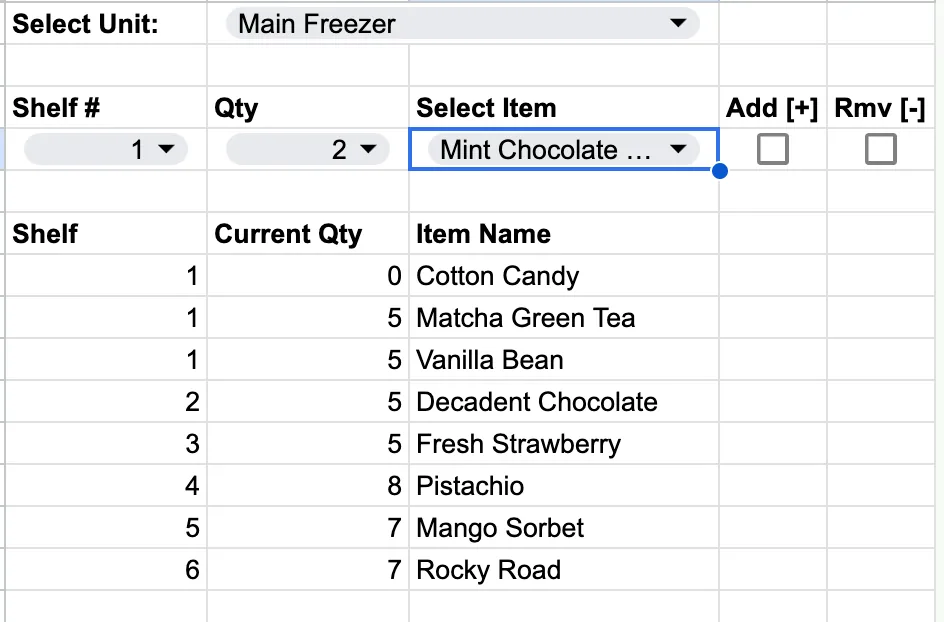

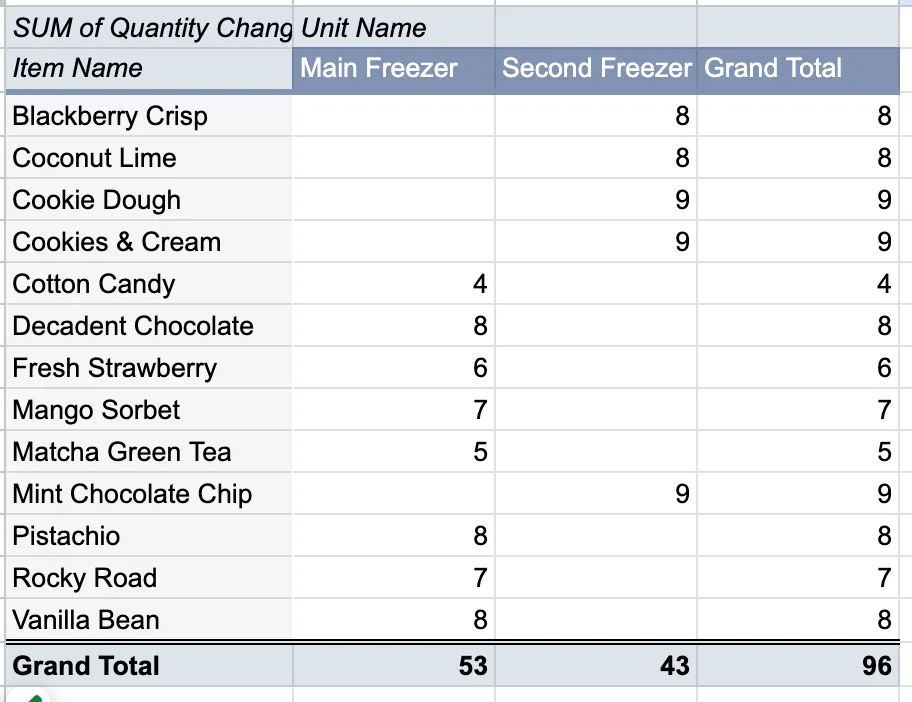
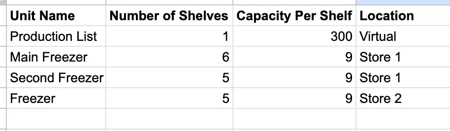
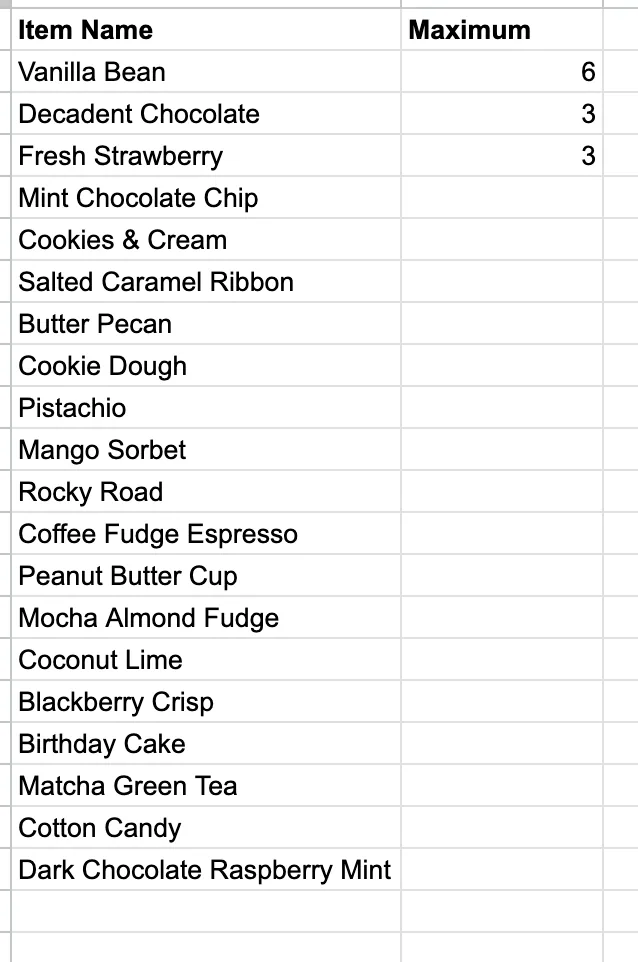
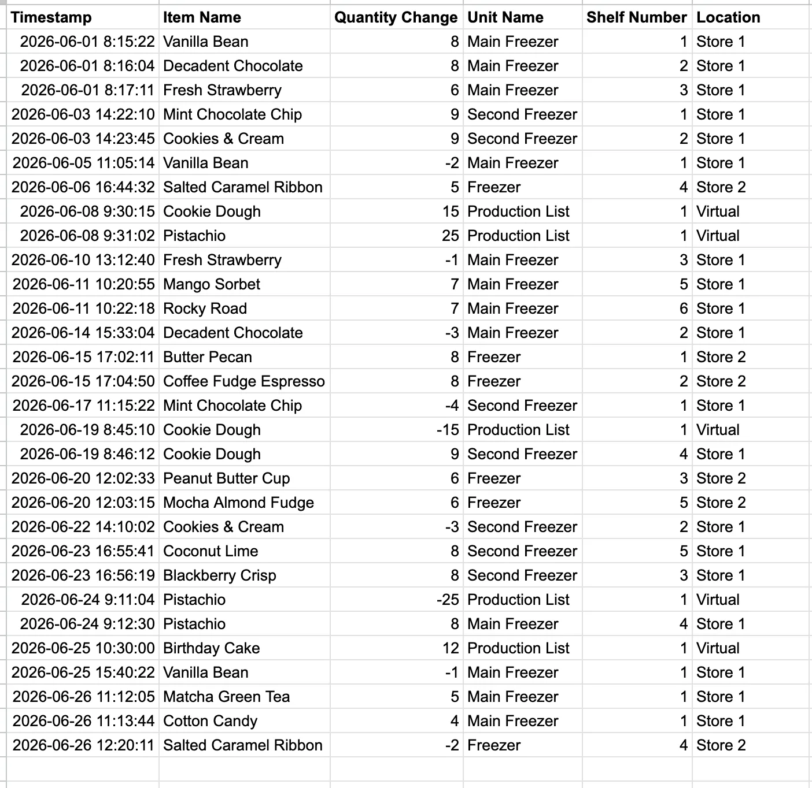
Limitations
Good learning experience to see what the backend might need to track and work. The “frontend” is unuseable and will actually slow people down. It’s not at all “touch first” and the Google Sheets extension that allow for a better UI are expensive and look horrible. Best to do a proper web app with a proper backend.
Prototype 2: v0.dev
Dumping the requirements to v0.app produced something a little more useable (until I ran out of credits).
This version is made to be “touch-first”. Everything is larger so that it’s visible from far. The colours and text can be modified. You see a top section “IN TRANSIT” if items are being moved. Dragging and dropping those items allows to insert multiple in 2 touches. The location can be locked to not accidentally change it. Then there’s a GLOBAL VIEW page where we see all the inventory and is where the production planning takes place. Can also filter by location.
There’s no backend here, this is all mocked in React.
Screenshots
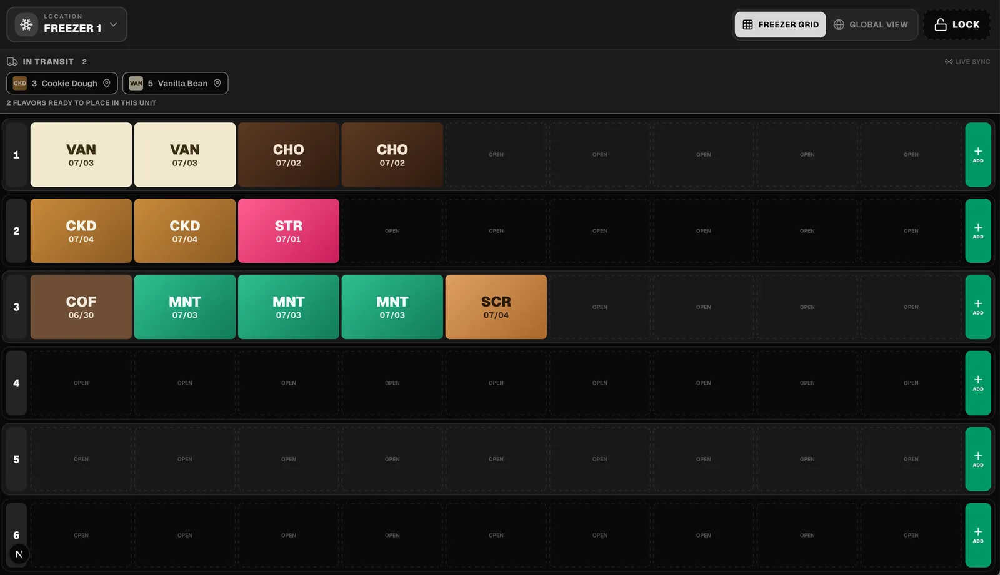
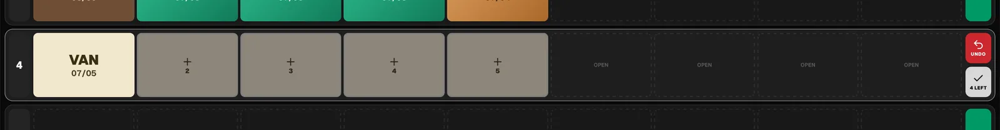
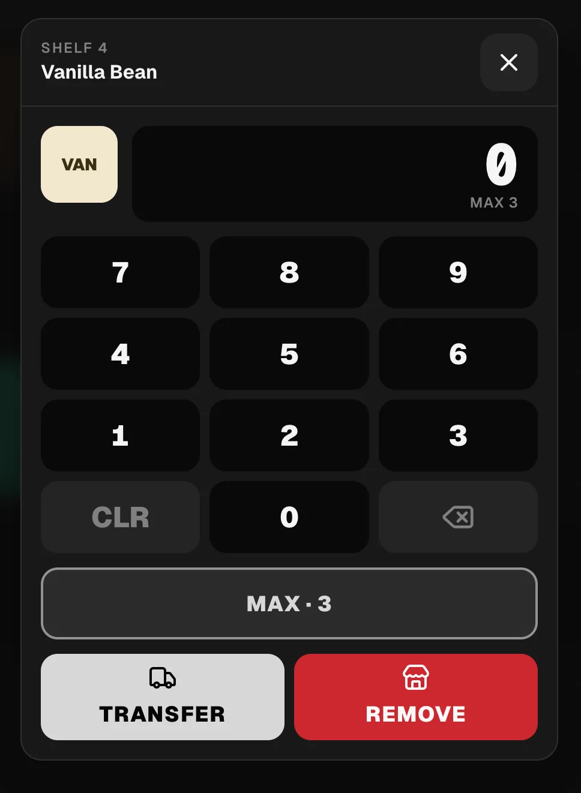
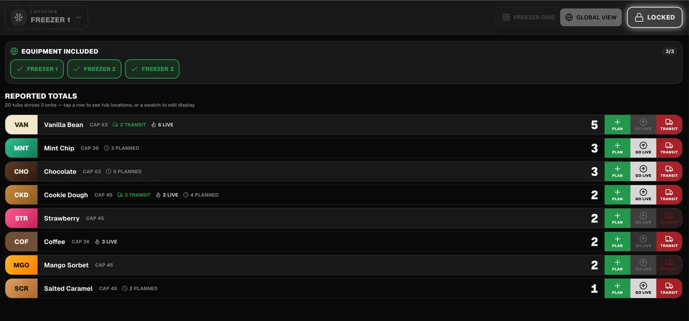
Notice we have per flavour the number in transit, live (being produced) and planned and the buttons to act on those to the right in a nice Italian flag theme (the owners are Italian).
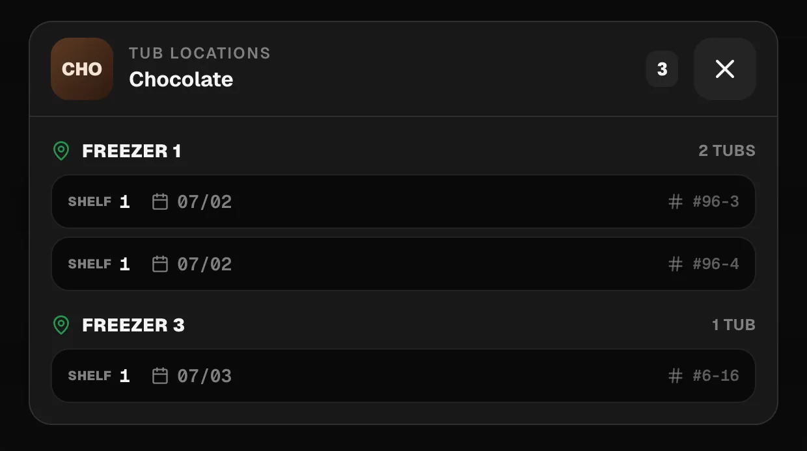
Clicking on the item in Global View shows the location of all the tubs and their production date and batch numbers. FIFO is assumed.
Prototype 2 assumed that a tub can go anywhere, and as much as we’d want a certain flavour to be grouped together, it doesn’t need to hold. The app basically becomes the live map of where everything is.
Protoype 3: Vue.js
I consider my freelancing work to be a way to learn by doing, I took the opportunity to learn Vue.js. The next prototype was written as a single page application (SPA) because inventory management is really just a data object that’s being partially updated and everything that’s displayed is really just a representation of that data object.
The backend would be pure Firebase because we need that for authentication as well. We will keep a db.ts file as a bridge so we can swap backends to FastAPI + PostgreSQL or SQLite if we need to or want to.
I had started porting the app when I met the owner…
Meeting with the owner on July 8, 2026
After meeting the owner, it became clear that placing tubs loosely anywhere isn’t how they do their work.
I have taken many pictures of their operation, but I don’t have the authorization to post them here, so I will have to simply describe it.
On the production and planning side, there’s a “master list” of all the recipes that can be produced. On the left, they mark with an “x4” to “x8” to indicate how many carapiners (tubs) to produce. 4 tubs can fit in the Carpigiani machine at a time and it’s the preferred amount.
On the freezer side, they have a list per freezer. Each sheet shows the name of the freezer, the shelves and which flavour goes on that shelf, and what’s the maximum amount allowed on that shelf. On the left, there are these magnetic markers and they represent the number of tubs of that flavour in that location. A marker set to the far left signifies “reserved”. There’s no digitized way of having this information: for the other stores, the employees there share a picture of their sheets on the group’s Whatsapp chat. If they forget to do so, the deliver man has to first travel to those shops to make the inventory before heading to the main store to get the correct number of tubs.
Lastly, the main production shop has two zones of freezers: store and storage. Store freezers are closer to the front and is from where the front-of-the-house workers come to get tubs for the display units. The storage are the extra tubs. Those are brought forward at the beginning of the day.
The main pain points are:
- FIFO on the tubs isn’t always observed
- They don’t know the inventory without having these photos, and if people forget to upload them, it’s extra work to drive to those shops and get a new photo
- Having an inventory and storage capacity, they can plan their deliveries to the other stores and the production to bring the inventory back up
- Reservations aren’t tracked well
- When they need to scale recipes, it’s done by hand and can lead to mistakes
Prototype 4: Vue.js - Switch to “tub-view”
Since the location of the tubs are pre-determined, it simplified things. A lot. Next, we would have to flip how the data structure is built to centre it around the “life of the tub”. This prototype was a big re-write and simplification from the third one. The views are still quite data dense and the UX needs refinement.
The app is split by plan/production and store/freezer views. We have light/dark mode and multi-lingual support. There’s a bit of reactivity if someone wants to check on their phones, but nothing thorough.
Data is still mocked but the login and hosting is on GCP Firebase.
Plan
The plan view shows everything: storage capacity, inventory, # reserved, delivery, storage available to then be able to plan the number of tubs to produce. This is basically the list of flavours that would match what is in production kitchen.
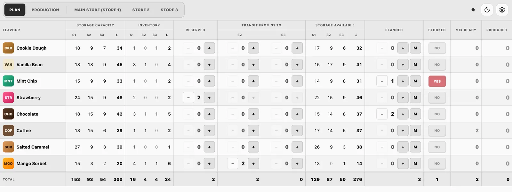
Clicking on the flavour shows a detailed view of where each tub of that flavour are, and the ability to change the date and to discard it. On the right, the recipe with the ability to scale it by ingredient or total weight. Of course, this recipe makes absolutely no sense!
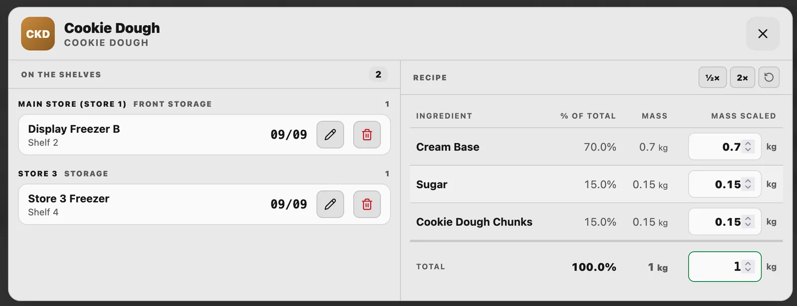
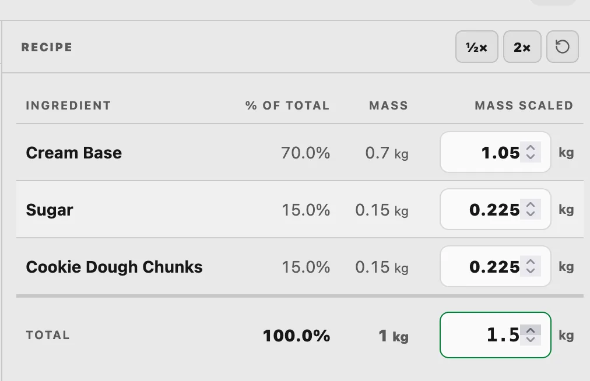
Clicking on the gear reveals more options. You shouldn’t use a Spanish flag for the Catalan language, you will upset some people, but there’s no Catalonia flag either, so I settled for a yellow heart.
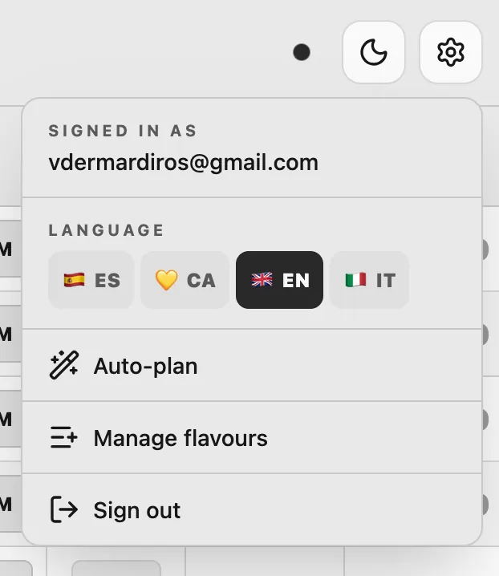
Manage flavours is to add/remove active flavours. There’s currently no way to create/duplicate a flavour.
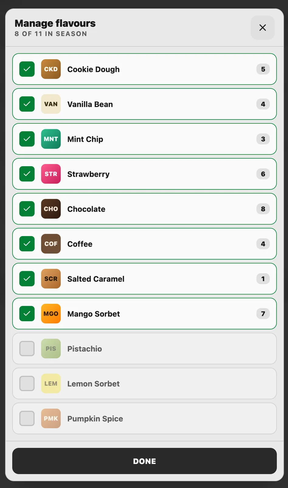
The Auto-plan feature plans: As close as we can get to a self-driving ice cream shop!
- How to route the tubs to the other stores
- How to move the tubs from storage forward in the production store
- How many tubs of each flavour to produce to replenish the freezers (rounded up or down in groups of 4)
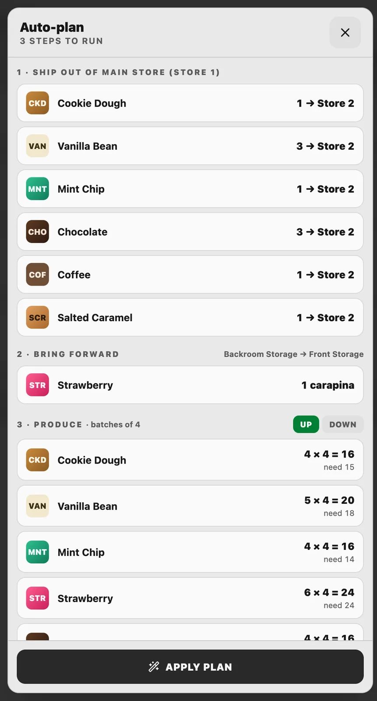
Production
Production view is a copy of the Plan view with dropped columns. The workers can also punch in if a mix is ready and waiting in the fridge to be churned. The steps can be skipped from planned to produced. A tub is produced by placing a planned tub into a freezer.
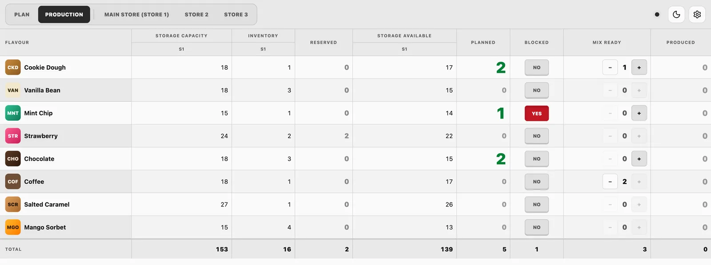
Freezer
The freezer view, per store, replicated the paper sheets with magnets. We have the freezers as cards placed as rows representing a zone, and columns for each freezer. Within the card, we have the rows representing shelves and a list of flavours that can go there.
The flavour row is:
{circle}{flavour} {date} {numTubs}/{numMaxTubs} {move}{sell}{add}
The date shows the date of the oldest tub.
Clicking on the flavour gives the same detailed view from the Plan and Production tabs.
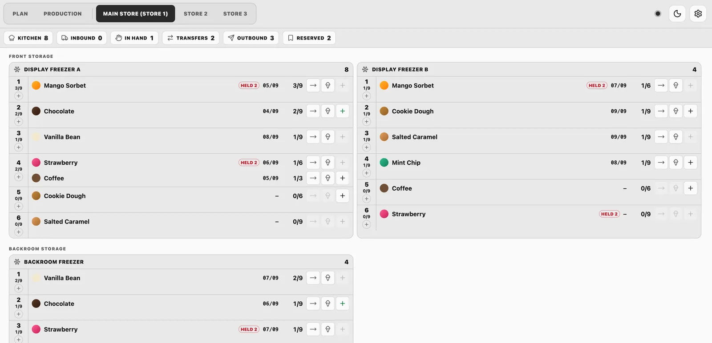
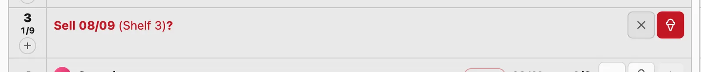
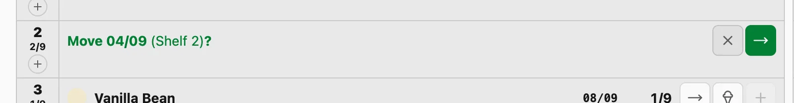
The buttons at the top ribbon below the main Plan-Production-Main-* gives detailed info:
- Kitchen: which are planned or have their mixes ready
- Inbound: which are in the truck and coming in – usually for the last two stores
- In hand: which are being moved within the store
- Transfers: which need to be placed on the truck and moved to the other stores
- Outbound: which are currently on the truck
- Reserved: which are reserved
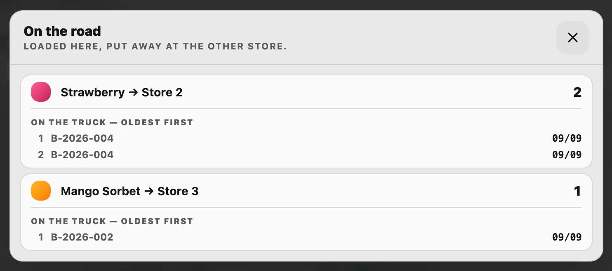
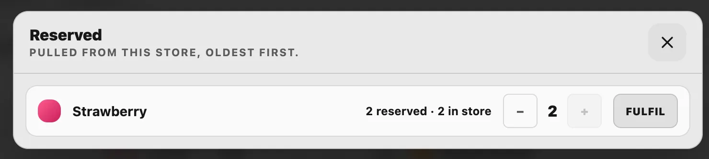
Deployment
And finally, I’ve set this whole project up with a GitHub Action to deploy on merge to main. It’s running on GCP Firebase and since the expected traffic and data is low, it should remain on the free-tier.
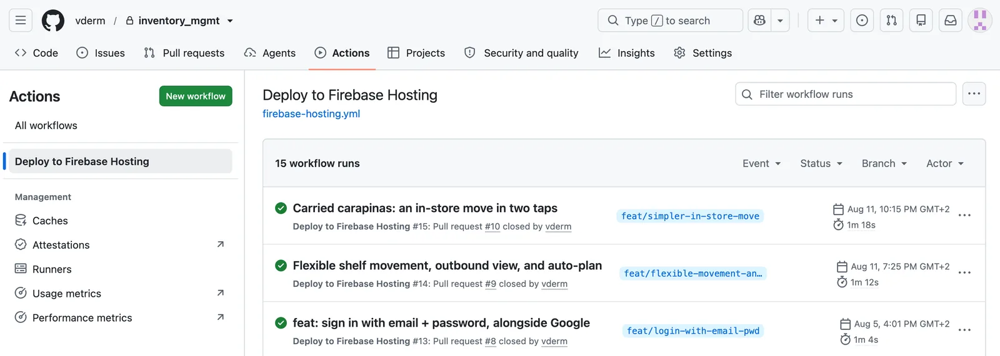